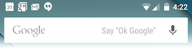
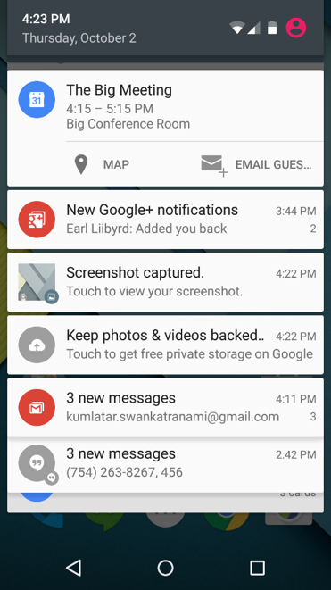
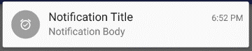
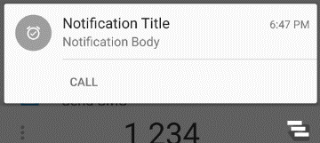
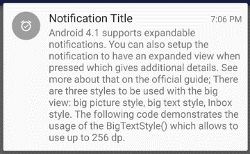
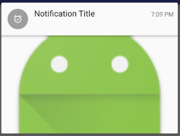
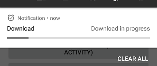

layout: true .top-line[] --- class: center, middle # 알림(Notification) --- ## 알림(Notification) * 단말기의 상단 부분에, 앱의 UI와 별도로 사용자에게 메시지를 표시   --- ## 알림 생성 * NotificationCompat.Builder 객체에서 알림에 대한 UI 정보와 작업을 지정 - setSmallIcon(): 작은 아이콘 - setContentTitle(): 제목 - setContentText(): 세부 텍스트 * NotificationCompat.Builder.build() 호출 - Notification 객체를 반환 * NotificationManager.notify()를 호출해서 시스템에 Notification 객체를 전달 --- ## 단순 알림 생성 ```java NotificationCompat.Builder mBuilder = new NotificationCompat.Builder(this); mBuilder.setSmallIcon(R.drawable.ic_alarm_on_black_24dp); mBuilder.setContentTitle(getResources().getString(R.string.notif_title)); mBuilder.setContentText(getResources().getString(R.string.notif_body)); NotificationManager mNotificationManager = (NotificationManager)getSystemService(Context.NOTIFICATION_SERVICE); // MY_NOTIFICATION_ID allows you to update the notification later on. mNotificationManager.notify(MY_NOTIFICATION_ID, mBuilder.build()); ```  .footnote[https://github.com/jyheo/AndroidTutorial/tree/master/Notification ] --- ## 알림에 액티비티 연결하기 * 알림을 터치하면 연결된 액티비티가 실행되도록 하는 것 - PendingIntent 사용 - 연결된 액티비티가 일반 액티비티, 알림 전용 액티비티인지에 따라 백스택 관리가 달라짐 * 일반 액티비티: 일반적인 앱의 액티비티임 - 사용자가 앱을 사용하면서 액티비티를 시작시키는 것과 유사하게 백스택을 관리 * 알림 전용 액티비티: 알림하고만 연결되어 실행 가능한 액티비티로 알림을 확장 하는 개념 - 사용자가 다른 방법으로 시작하지는 못하게 함 --- ## 알림에 액티비티 연결하기 - 일반 액티비티 * 알림을 터치하면 일반 액티비티인 SecondActivity가 시작 * AndroidManifest.xml의 SecondActivity 정의 부분 ```xml <activity android:name=".SecondActivity" android:parentActivityName=".MainActivity"> </activity> ``` * PendingIntent 생성하고 알림 등록 ```java // pendingIntent Intent intent = new Intent(this, SecondActivity.class); TaskStackBuilder stackBuilder = TaskStackBuilder.create(this); stackBuilder.addParentStack(SecondActivity.class); stackBuilder.addNextIntent(intent); PendingIntent pIntent = stackBuilder.getPendingIntent(0, PendingIntent.FLAG_UPDATE_CURRENT); mBuilder.setContentIntent(pIntent); mBuilder.setAutoCancel(true); ((NotificationManager)getSystemService(Context.NOTIFICATION_SERVICE)) .notify(MY_NOTIFICATION_ID, mBuilder.build()); ``` .footnote[https://github.com/jyheo/AndroidTutorial/tree/master/Notification ] --- ## 알림에 액티비티 연결하기 - 알림 전용 액티비티 * 알림을 터치하면 알림 전용 액티비티인 TempActivity가 시작됨 * AndroidManifest.xml의 TempActivity 정의 부분 ```xml <activity android:name=".TempActivity" android:taskAffinity="" android:excludeFromRecents="true"> </activity> ``` * PendingIntent 생성하고 알림 등록 ```java // pendingIntent Intent intent = new Intent(this, TempActivity.class); intent.setFlags(Intent.FLAG_ACTIVITY_NEW_TASK | Intent.FLAG_ACTIVITY_CLEAR_TASK); PendingIntent pIntent = PendingIntent.getActivity(this, 0, intent, PendingIntent.FLAG_UPDATE_CURRENT); mBuilder.setContentIntent(pIntent); mBuilder.setAutoCancel(true); ((NotificationManager)getSystemService(Context.NOTIFICATION_SERVICE)) .notify(MY_NOTIFICATION_ID, mBuilder.build()); ``` .footnote[https://github.com/jyheo/AndroidTutorial/tree/master/Notification ] --- ## 알림에 버튼 추가 * 앞의 코드에 아래 코드를 추가하면 버튼이 추가됨 ```java Intent callintent = new Intent(Intent.ACTION_DIAL, Uri.parse("tel:1234")); requestID++; //unique requestID flags = PendingIntent.FLAG_CANCEL_CURRENT; pIntent = PendingIntent.getActivity(this, requestID, callintent, flags); *mBuilder.addAction(R.drawable.ic_phone_black_24dp, "Call", pIntent); ```  .footnote[https://github.com/jyheo/AndroidTutorial/tree/master/Notification ] --- ## 알림에 확장 뷰 * 그림이나 장문을 추가하여 확장 뷰를 알림에 넣을 수 있음 ```java NotificationCompat.BigTextStyle btStyle = new NotificationCompat.BigTextStyle().bigText( getResources().getString(R.string.long_notification_body)); mBuilder.setStyle(btStyle); ```  .footnote[https://github.com/jyheo/AndroidTutorial/tree/master/Notification ] --- ## 알림에 확장 뷰 * 그림 넣은 확장 뷰 ```java Bitmap largeIcon = BitmapFactory.decodeResource(getResources(), R.mipmap.ic_launcher); NotificationCompat.BigPictureStyle bpStyle = new NotificationCompat.BigPictureStyle().bigPicture(largeIcon); mBuilder.setStyle(bpStyle); ```  .footnote[https://github.com/jyheo/AndroidTutorial/tree/master/Notification ] --- ## 알림에 프로그래스 표시 * 알림에 프로그래스 바를 표시 ```java new Thread( new Runnable() { @Override public void run() { int incr; for (incr = 0; incr <= 100; incr += 5) { mBuilder.setProgress(100, incr, false); mNotificationManager.notify(MY_NOTIFICATION_ID, mBuilder.build()); try { Thread.sleep(5 * 1000); // Sleep for 5 seconds } catch (InterruptedException e) { Log.d("NOTI", "sleep failure"); } } mBuilder.setContentText("Download complete") .setProgress(0, 0, false); // Removes the progress bar mNotificationManager.notify(MY_NOTIFICATION_ID, mBuilder.build()); } } ).start(); ```  .footnote[https://github.com/jyheo/AndroidTutorial/tree/master/Notification ]